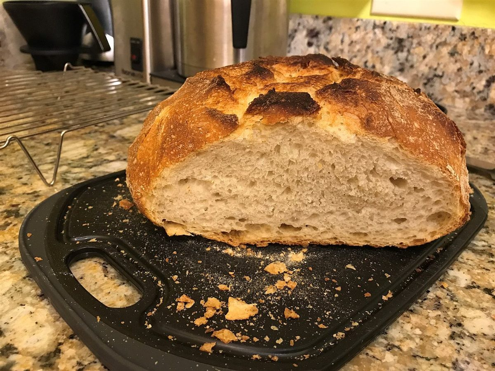

店のこと
店のこと
お店について確認できたのは、所在地とInstagramのみです。そのほかの内容は準備中です。


写真はパンの断面のイメージです。お店のものではありません。
この試作サイトについて
ランタンの部位を読む
このサイトは、キャンプで吊るしたり置いたりするランタンを図にしたつもりで作りました。六つの部位に番号をふり、図と並べています。制作側の連想で、お店の理念・由来とは無関係です。実際のランタンの仕様や安全な使い方を示すものでもありません。
1
吊り手(ベイル)
ランタンを持ち上げたり、枝やフックに掛けたりするための半円の取っ手。
2
トップキャップ
上部をふさぐ金属の屋根。熱や空気の通り道になる小さな口が空いている。
3
グローブ(ほや)
明かりを包む透明なガラスの胴。光がまわりへ広がる、いちばん目立つ部分。
4
マントル
グローブの中心に吊るす、袋状の発光部。灯りの芯にあたる。
5
調整つまみ
明るさを整えるための小さなつまみ。胴の根もとに付いている。
6
ベース(台座)
ランタン全体を受け止める土台。平らな場所に置いても立つように作られている。


写真はパンのイメージです。お店のものではありません。
ご案内
お店のこと(確認できたものだけ)
| 所在地 | 〒861-2402 熊本県阿蘇郡西原村小森６１８−５８ |
|---|---|
| 電話 | 準備中 |
| 営業時間 | 準備中 |
| 定休日 | 準備中 |
| ご予約 | 準備中 |
| 駐車場 | 準備中 |
| SNS | Instagram @odorucompanio |


写真はパンのイメージです。お店のものではありません。